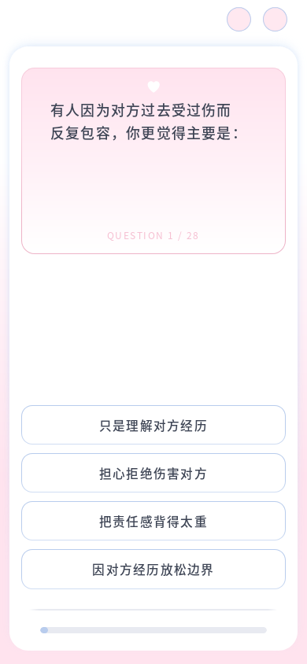
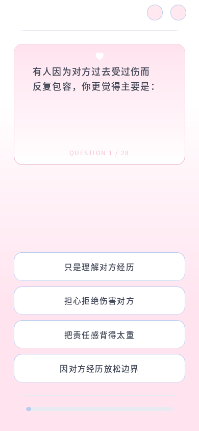

2026-10-13 · 本地 Firefox · 修改前后固定 C10，测量单位为 CSS 像素。


960 组检查通过：按钮实际高度为修改前 110%、圆角为 115%、上下灰线同样式、外框视觉移除、题干位置与换行、完整文本、滚动可达性及重复 resize。高度比例的最大误差低于 0.02px。
| 视口 | C10 按钮高度 | 圆角 | 上下灰线共同宽度 | 逐题检查 |
|---|---|---|---|---|
| 320 × 572 | 50.40 → 55.43px | 14.00 → 16.10px | 255.52px | 96/96 |
| 360 × 640 | 50.40 → 55.43px | 14.00 → 16.10px | 290.75px | 96/96 |
| 375 × 667 | 50.40 → 55.43px | 14.00 → 16.10px | 303.15px | 96/96 |
| 390 × 844 | 50.40 → 55.43px | 14.00 → 16.10px | 315.27px | 96/96 |
| 430 × 932 | 50.40 → 55.43px | 14.00 → 16.10px | 347.60px | 96/96 |
| 768 × 1024 | 50.40 → 55.43px | 14.28 → 16.43px | 601.60px | 96/96 |
| 1440 × 900 | 50.40 → 55.43px | 12.80 → 14.72px | 541.43px | 96/96 |
| 844 × 390 | 50.40 → 55.43px | 9.44 → 10.86px | 541.43px | 96/96 |
| 899 × 900 | 50.40 → 55.43px | 16.38 → 18.84px | 601.60px | 96/96 |
| 900 × 899 | 50.40 → 55.43px | 10.07 → 11.58px | 541.43px | 96/96 |
留白充足时，选项组底边保持原位置，增加的高度全部向上消耗中间留白。320、360、375px 窄屏中的少数长选项会用尽留白，此时页面自然增长，底部灰线及进度条随页面延长；这沿用此前确认的完整阅读与整页滚动要求，避免重叠或裁剪。按钮仍各增加 10%，组内间距与底部相对间距保持稳定。
完整 28 题、上一题、返回未答题、刷新恢复、关于页往返及结果跳转通过；100%/200% 浏览器缩放在同一 CSS 视口下位置与换行一致。本轮未实测其他浏览器或实体手机。
Node 测试 13/14，唯一失败仍为既有的题库维护源与运行 JSON 不一致；本轮未改题库文件或评分代码。仅修改布局 CSS 与项目说明。